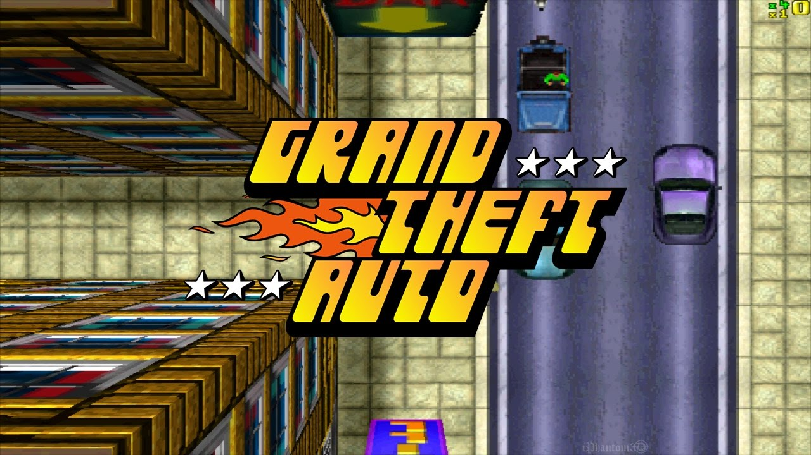

1. GTA 1 – Grand Theft Auto (1997)

Grand Theft Auto é um jogo eletrônico de ação-aventura desenvolvido pela DMA Design (Futura Rock Star Games),
publicado pela BMG Interactive e distribuído pela Take-Two Interactive. É o primeiro título da série
Grand Theft Auto e foi lançado em meados de 1997 para MS-DOS e Microsoft Windows e PlayStation 1.
O primeiro GTA já tinha o fator mundo aberto forte. Diferente dos gráficos atuais, em 3D e com muita imersão, o
game de origem tinha gráficos em 2d e era um top-view, o jogador via tudo de cima.
De forma simples, ele é basicamente um game de policia e ladrão, onde você pode tacar o terror e fugir da
polícia.
O game se passa em 3 cidades em que você pode explorar livrementre, são essas: Liberty City, San Andreas e Vice
City Cidades também presentes nos jogos mais novos.
|
|
|